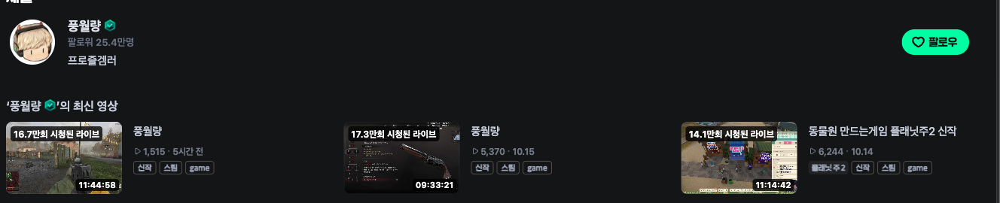

Watch Party
Host
Join late. Still watch together.
The AI manager for YouTube watch parties, built on Gemini.

The Community 2
A Korean survival reality show. Strangers with very different values live together and compete to stay.
Episodes 1 to 3 are free on YouTube.

My book club watches it tonight
Our book and drama club picked it, so I set up a watch party on the spot. At 22:00 tonight we each sit at home with popcorn and beer, press play together, and react in group chat.


The same need lives in live streaming
Live 9 to 13 hours a day
Every day needs new content. One streamer said finding it takes most of the prep.
So they watch together
Watching a show with chat is fun for viewers and fills the long hours.
I watch 풍월량 and 서새봄 on CHZZK every day.


That’s why watch-alongs exist

Licensed watch-alongs since 2024-07

Licensed sports, esports and shows

Premieres: one time slot, live chat

We spot spoilers by the scene a message talks about,
not by when it was posted.
 Twitch Twitch | SOOP | YouTube Premieres | CHZZK | Watch Party Host | |
|---|---|---|---|---|---|
| Watch together | X | O | O | O | O |
| ① Recap for late joiners | X | △ live now | X | X | O from the video |
| Answers only from what has aired | X | X | X | X | O |
| ② Spoilers blurred by scene | X | X | X | X | O |
| Anyone hosts YouTube like TV | X | X | X | X | O |
Join late, get caught up to what has aired
Spoilers get blurred the moment they’re posted
A rewatcher types about a scene that hasn’t aired yet. Gemini finds that scene and blurs the message as it arrives.
Want to see it? Click to reveal, your choice. The blur clears by itself when that scene airs.

Blurred on arrival. Click to show. Friends reply: “야야 그거 스포임”
Thank you
Join late. Still watch together.
github.com/ggplab/watch-party-host